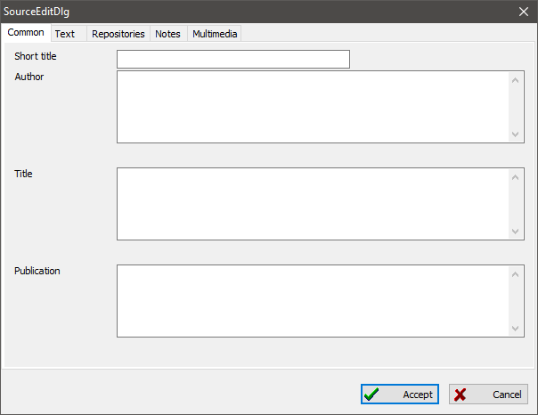

A source is a reference to any private document, or a file from an archive site, where you found information about a person. Source records are used for the following purposes: they store specific information about the information's origin and unite and simplify research for a person, family and event, that was mentioned in a document.
This can be a birth or death certificate, a census, a register of births, a confessional book, or other document types.
Each source reference has two additional properties: page or sheet number where the mentioning was made, and authenticity level for the information. Having a page or sheet number is helpful when you need to review the source again. An authenticity level quickly shows you how much you can trust a source of information. When a source document has blots or damage, and you could not have read text with assurance, you might assign "Questionable reliability of evidence" as the level to such a source. This can prevent you from false conclusions.
An authenticity level also affects the authenticity index; which is calculated for a person in a statistics module to analyze arithmetic mean values. Tree diagrams use an authenticity level to make displayed information more obvious.
A source record also has an archive (repository) property that defines where the source is stored. It is worth noting that the term "archive" here is not necessarily a state archive or private archive institution, but it is might also be a private document collection or other type of document storage.

There is a uniting table on the "Sources" tab of the main working window, which includes all sources available in the database. A source summary to the right of the table shows all information about the selected source and links made from other records to the one selected.
See also: Person, Family, Event/fact, Reference to sources, Note, Multimedia, Archive, Address.